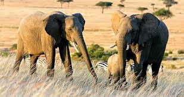
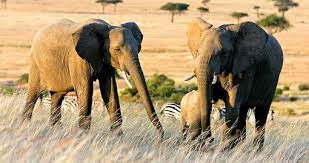

Dubai is on eof the major tourist attraction around the world because its weather doesn't vary at any point making its activties runs throughout the year. The images above are some of the major activities you might like to be involved in at anypoint of the year especially during the holidays. You can book for your children, siblings and even friends. The security at the dubai tourist attraction are the best for tourist and there is no doubt

 


Kenya is a country in East Africa with coastline on the Indian Ocean. It encompasses savannah, lakelands, the dramatic Great Rift Valley and mountain highlands. It's also home to wildlife like lions, elephants and rhinos. From Nairobi, the capital, safaris visit the Maasai Mara Reserve, known for its annual wildebeest migrations, and Amboseli National Park, offering views of Tanzania's 5,895m Mt. Kilimanjaro


Europe is a continent comprising the westernmost peninsulas of Eurasia, located entirely in the Northern Hemisphere and mostly in the Eastern Hemisphere. It shares the continental landmass of Afro-Eurasia with both Africa and Asia


South Africa is a country on the southernmost tip of the African continent, marked by several distinct ecosystems. Inland safari destination Kruger National Park is populated by big game. The Western Cape offers beaches, lush winelands around Stellenbosch and Paarl, craggy cliffs at the Cape of Good Hope, forest and lagoons along the Garden Route, and the city of Cape Town, beneath flat-topped Table Mountain
The Caribbean is a subregion of the Americas that consists of the Caribbean Sea and its islands, the nearby coastal areas on the mainland may also be included. The region is southeast of the Gulf of Mexico and the North American mainland, east of Central America, and north of South America